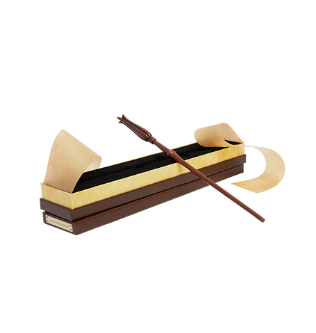
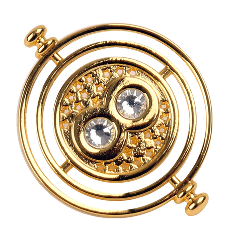
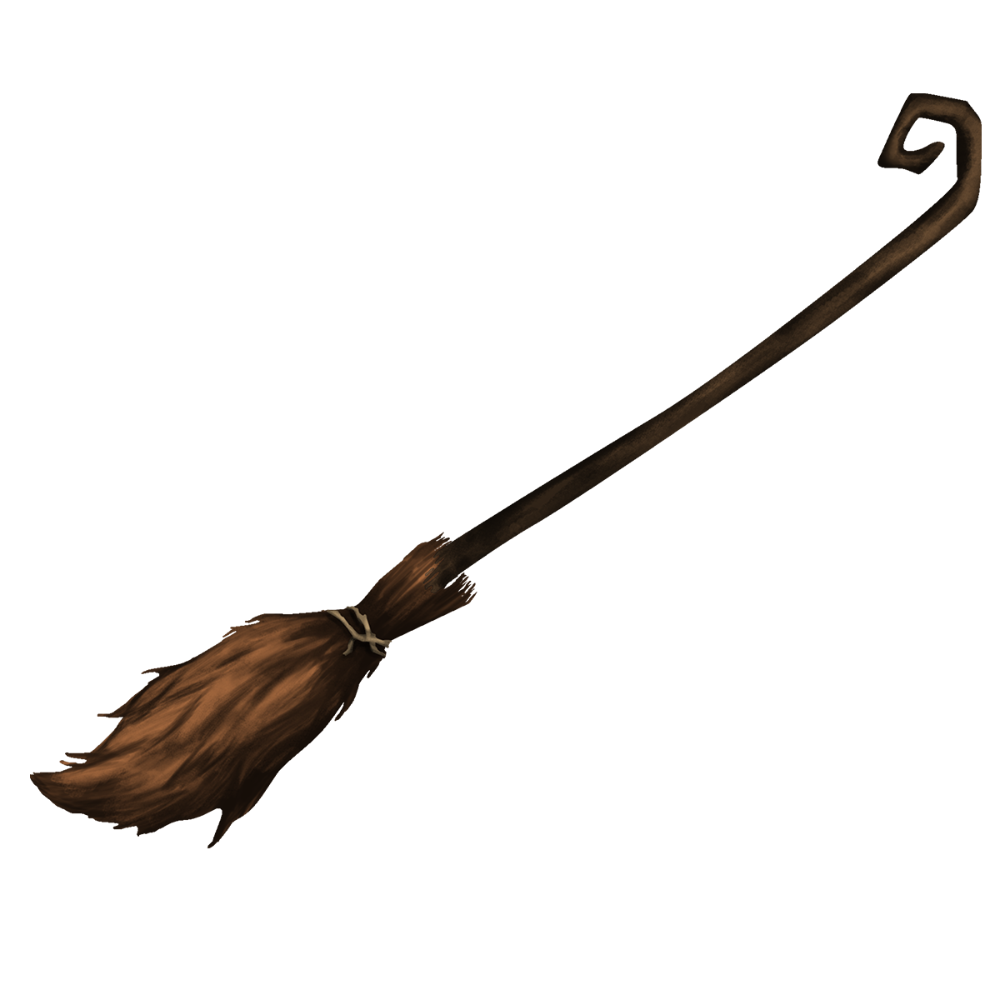
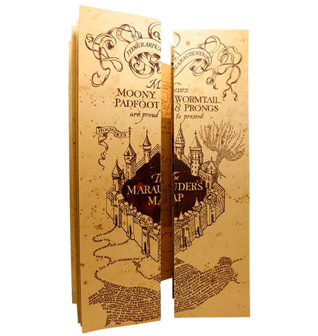
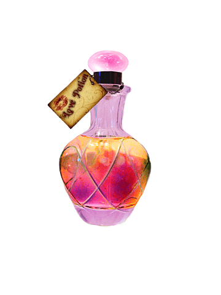
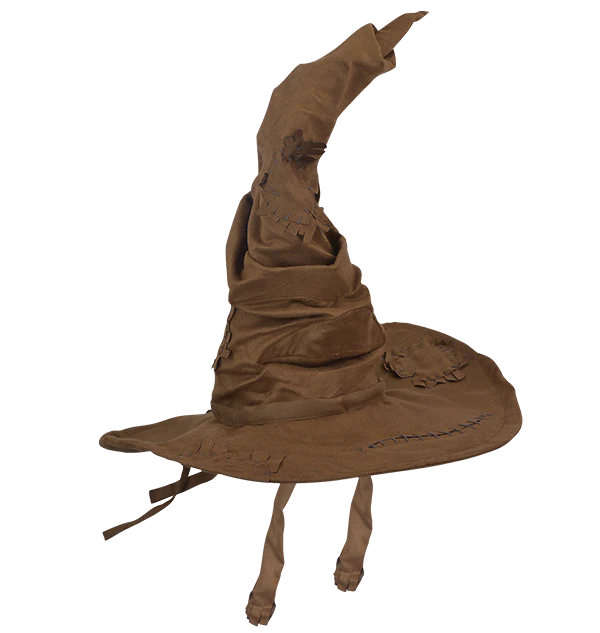
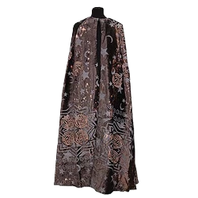
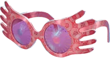

Наша новая коллекция волшебных предметов

Палочка как бы фокусирует в себе волю волшебника и выстреливает
преобразующий заряд в нужном направлении. В редких случаях особо
сильные маги способны обходиться без волшебной палочки,
преобразуя пространство и предметы только силой мысли.

Это волшебный предмет, позволяющий вернуться в недалёкое
прошлое. Выглядит как песочные часы, посаженные на ось, которая
в свою очередь крепится на длинной золотой цепочке.

Никогда не упоминается, что летать может любая метла. Очевидно,
при изготовлении летающих мётел применяется определённая
технология. Производители мётел постоянно улучшают свою
продукцию. Существуют мётлы семейного класса, спортивные,
гоночные и игрушечные.

Особая карта, показывающая весь замок Хогвартс и его ближайшие
окрестности, а также местоположение любого человека в Хогвартсе,
где бы тот ни находился, даже если он прячется под
мантией-невидимкой. Карта не могла показать лишь того, кто
находится в Выручай-комнате и при этом не хотел быть никому
видимым. Эту карту создали Мародёры во время учёбы в Хогвартсе.

Это субстанция чаще всего в жидком состоянии, приготовленная по
определённому рецепту, в состав которой могут входить
разнообразные ингредиенты.

Распределяющая шляпа имеет упрямую, но рассудительную, умную
личность. Шляпа исполняет каждый год новую песенку, показывая,
что умеет импровизировать и выдумывать
Шляпа рассудительна и умна, так как за тысячу лет имеет огромный опыт и знания в распределении учеников и понимания их сути. Также шляпа может прислушиваться к ученику, если он имеет качества нескольких факультетов.
Шляпа рассудительна и умна, так как за тысячу лет имеет огромный опыт и знания в распределении учеников и понимания их сути. Также шляпа может прислушиваться к ученику, если он имеет качества нескольких факультетов.

Волшебная мантия, делающая невидимым того, кто её надевает. Она
сделана из очень лёгкой «серебристой» ткани. И её невозможно
порвать или изрезать заклинаниями.

Изобретение Ксенофилиуса Лавгуда, редактора журнала «Придира».
По словам его дочери Полумны, с их помощью можно увидеть
мозгошмыгов. Спектрально-астральные очки прилагались к выпуску
«Придиры» в сентябре 1996 года. Также продавались в Хогсмидском
магазине «Дэрвиш и Бэнгз».